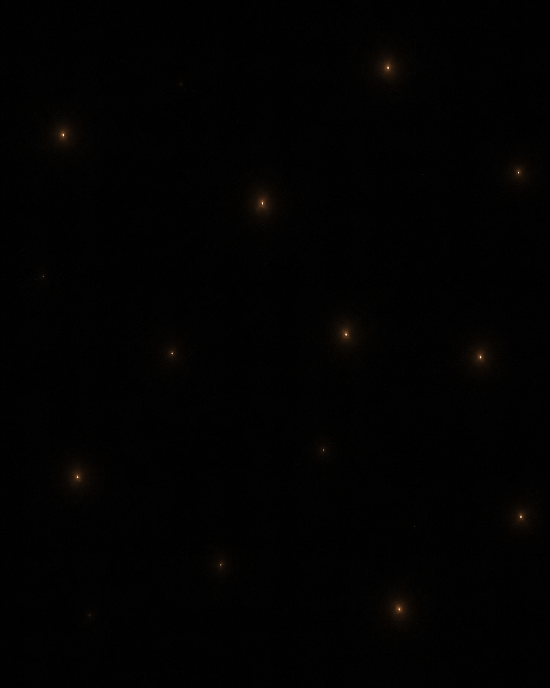

I saw a post about a rock.
Specifically, about organic molecules — amino acids, the carbon-chain precursors of biology — recovered from asteroid samples brought back to Earth. The poster was excited, and the excitement ran in a familiar direction: maybe life was delivered here. Maybe the ingredients rode in from space, which would mean they could ride in anywhere, which would mean we are probably not alone.
I understand the pull of that reading. I think it points at exactly the right fact and draws exactly the wrong comfort from it.
The fact is solid. The building blocks of life are not special to Earth. Amino acids form in interstellar clouds and arrive intact on meteorites. Complex carbon compounds show up in the atmospheres of distant worlds and the tails of comets. The chemistry that precedes biology appears to be cheap, common, and everywhere. On this, the asteroid samples are just the latest confirmation of something we already suspected: the universe is generous with the raw materials.
Here is where the hopeful reading goes wrong. It treats abundance of ingredients as evidence for company. But run the logic forward instead of stopping at the happy part.
If the precursors are everywhere, then life — should it start — starts in scattered, independent pockets, seeded from the same cosmic pantry but cooking in isolation. No two kitchens in contact. And the volume that scatters them is not large in any sense a human intuition can hold. It is large enough that light itself, the fastest thing there is, takes billions of years to cross it. Abundance doesn’t gather these instances together. It spreads them across the entire cosmos, one thin sprinkle at a time.
That’s the first problem: distribution in space. There’s a second, and it’s worse.
Life is not only widely spaced. It is brief. Every instance we can reason about — including our own — occupies a sliver of time against the age of the universe. A biosphere flares up, persists for a while, and ends, whether by its star, its luck, or its own hand. Now combine the two. Widely scattered and short-lived means that for any two instances of life to make contact, their brief active windows must overlap and the light between them must have time to cross the gulf. Both conditions, at once, across billions of light-years.
They almost never will.
This is the part the asteroid excitement misses. The generosity of the chemistry doesn’t reduce the isolation. It is the isolation. If life required some rare convergence found in one place in a trillion, you might get a few dense clusters, neighbors close enough to notice each other. Instead you get the opposite: a universal, low-probability lottery run everywhere, its winners smeared so thinly across space and time that no two tickets ever sit close enough, or contemporaneous enough, to shake hands. Ubiquity is precisely what guarantees loneliness. Spread the lottery across the whole sky and you ensure the winners never meet.
So the picture inverts. We tend to imagine two failure modes: either life is rare and we’re alone, or life is common and we have company. This suggests a third, and it’s the cruelest of the three. Life is common — and we are alone anyway. Not for lack of neighbors, but because “neighbor” is a spatial word, and the neighbors are separated by distances that also happen to be durations. By the time their light reaches us they are long gone, and ours reaches no one who is there to receive it. Everyone is out there. No one is reachable. The cosmos is crowded and empty at the same time, and for the same reason.
Now, there is an objection to all of this, and it is a good one. It nearly rescues us. I want to give it its full strength before I take it away.
The isolation argument leans on randomness — sparks firing at unrelated moments across billions of years, windows that never line up. But life’s arrival may not be random in time at all. Our kind of life needs heavy elements: carbon, oxygen, iron, forged inside stars and scattered when they die. That takes generations of stars to accumulate. It needs the universe to cool, the raw metallicity to climb, rocky worlds to become possible. All of that is governed by a single clock — cosmic time, the age of the universe itself, which ticks at the same rate for everyone drifting along with the expansion. There is, in other words, a plausible cosmic spring: an epoch, some window of billions of years after the Big Bang, when the conditions for life like ours come ripe more or less everywhere at once. If that’s true, the sparks don’t fire at random. They fire around the same cosmic age. The whole living cohort of the universe wakes up together.
For a paragraph, that feels like salvation. It defeats the timing problem head-on. The reason the windows never overlapped was that they were scattered randomly across deep time — so synchronize them, born together on a shared clock, and suddenly your contemporaries are real. Not ghosts from the deep past. Peers, alive right now, in the one sense of “now” the universe actually honors.
Then the trap springs, and it springs harder than the problem it was meant to solve.
That shared moment — the slice of the universe that holds all your synchronized contemporaries, everyone at the same cosmic age — is precisely the surface across which no signal can travel. Light does not move along it. Light moves toward us out of the past, dragging its billions of years of lag; that is the only thing any telescope ever collects. The present moment we might share with every peer civilization in existence is, by its very geometry, the one direction light refuses to go. You cannot see your contemporary. You can only ever see what they were, ages before they became your contemporary — and by the time their present light finally crawls across to reach some future observer, they, and you, will both be long gone.
So the rescue doesn’t soften the loneliness. It perfects it. Grant every optimistic assumption — grant that the universe synchronized us, that the sky right now is crowded with our exact peers all waking at the same age of the same universe — and you have only sharpened the knife. Everyone alive at once. No one able to look at the at once. The universe turns out to have a present tense after all, and it spends that present tense hiding everyone in it from everyone else.

I keep circling one image. Picture every instance of life that has ever ignited as a brief spark on an enormous dark field — each one flaring, glowing, and going out. There are, perhaps, a great many of them. Perhaps they even light up together, on the same cosmic cue. But they do not stand close, and no one among them can see the others burning. Each spark lives and dies inside its own small pool of light, having never learned that any of the others were ever there at all. The field is not empty. It has just never been illuminated all at once — and by its own construction, it never can be.
There is one way out, and it’s the very thing the original poster was excited about — which is the part I find genuinely beautiful, once it’s turned around.
Panspermia. Delivery. If life, or its near-precursors, can travel — riding the asteroids and comets that fling material between worlds and possibly between stars — then the sparks are not fully independent after all. A single genesis could be smeared across many rocks, many worlds, seeding relatives instead of strangers. That wouldn’t defeat the distances, and it wouldn’t defeat the hidden present. It would do something subtler: it would make the distant life related to us rather than merely parallel to us. Not company we can talk to. Family we’ll never meet, but family.
So the asteroid samples aren’t evidence that we have neighbors. The distances and the durations and the geometry of the present already foreclose that. They’re a hint at the only loophole the universe seems to allow — not a way to end the isolation, but a way to not be quite so alone inside it. The delivery doesn’t bring us company.
It brings us kin.